BLOCK NHĨ THẤT TRÊN ĐIỆN TÂM ĐỒ
8.1. Block nhĩ thất độ I (First Degree AV Block) — ECG
Block nhĩ thất (block tim) độ I
Nút nhĩ thất (AV node)
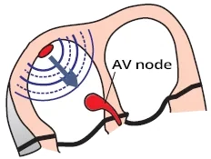
- Trong nhịp xoang (sinus rhythm), các xung động được phát ra đều đặn (khoảng 60/phút) tại nút xoang (SA node)
- Mỗi xung động lan qua hai tâm nhĩ (sóng P) tới nút nhĩ thất
- Tại nút nhĩ thất, xung động bị chậm lại khoảng 0,1 giây
- Trong khoảng thời gian này, hai tâm nhĩ bơm máu xuống hai tâm thất
- Sau đó xung động tiếp tục đi xuống hai tâm thất (phức bộ QRS)
Khoảng PQ (PQ interval)
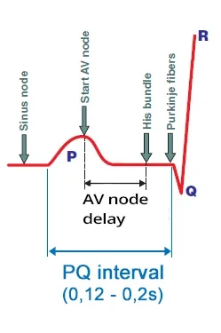
- Khoảng PQ sinh lý nằm trong khoảng (0,12 – 0,2 giây)
- Khoảng PQ = sóng P (khoảng 0,08 giây) + đoạn PQ (khoảng 0,1 giây)
- Xung động bắt nguồn từ nút xoang
- Khi lan tới cơ tâm nhĩ, xung động bắt đầu tạo ra sóng P
- Đồng thời, xung động lan qua hệ thống dẫn truyền hướng về nút nhĩ thất
- Xung động đi trong hệ thống dẫn truyền không tạo ra sóng nào trên ECG
- Xung động đi vào nút nhĩ thất
- Xung động lan từ nút xoang
- Qua cơ tâm nhĩ (sóng P)
- Và qua hệ thống dẫn truyền (các đường liên nút — internodal pathways) tới nút nhĩ thất
- Vào thời điểm hai tâm nhĩ khử cực (đỉnh sóng P)
- Xung động đi tới nút nhĩ thất qua hệ thống dẫn truyền
- Xung động lan từ nút xoang
- Dẫn truyền chậm dần (decremental conduction) trong nút nhĩ thất
- Xung động lưu lại trong nút nhĩ thất khoảng 0,1 giây (không tạo ra sóng nào)
- Sau đó xung động đi tới bó His (không tạo ra sóng nào)
- Khử cực vách liên thất
- Từ bó His, xung động đi qua các sợi Purkinje
- Bắt đầu khử cực cơ vách liên thất
- Bắt đầu tạo ra sóng Q
- Từ bó His, xung động đi qua các sợi Purkinje
Block nhĩ thất độ I
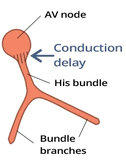
- Dẫn truyền xung động qua nút nhĩ thất bị kéo dài nhưng không bị block
- Đây không phải là block mà là dẫn truyền bị chậm trễ
- Trên ECG, ta thấy khoảng PQ kéo dài > 0,2 giây
- Dẫn truyền xung động kéo dài có thể xảy ra ở:
- Trên bó His — suprahisian (tại nút nhĩ thất — hay gặp nhất)
- Tại bó His — hisian (trong bó His)
- Dưới bó His — infrahisian (bên dưới bó His)
- Ở đoạn đầu chỗ chia đôi của các nhánh Tawara (Tawara branches)
ECG và block nhĩ thất độ I
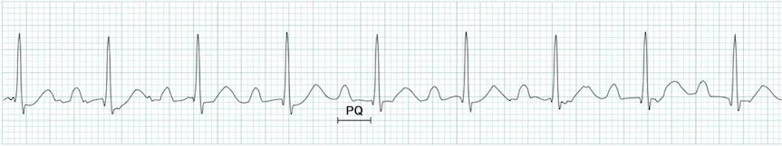
- Khoảng PQ kéo dài > 0,20 giây
(> 5 ô nhỏ) - Phức bộ QRS hẹp (< 0,12 giây)
- Vì hai tâm thất được khử cực qua các nhánh Tawara còn nguyên vẹn
- QRS có thể giãn rộng (> 0,12 giây) trong trường hợp có dẫn truyền lệch hướng (aberrant conduction)
Block nhĩ thất độ I
- Khoảng PQ kéo dài: 0,28 giây (> 0,2 giây)
- (7 ô nhỏ)
- Nhịp xoang
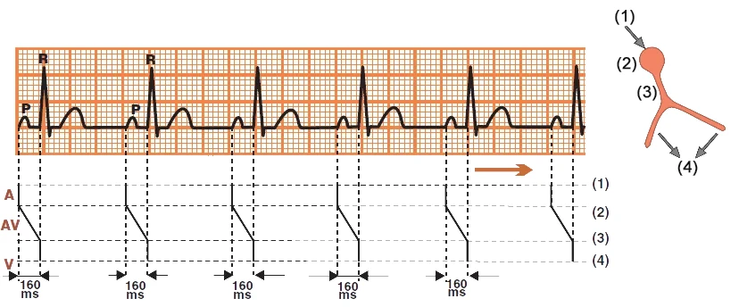
Nhịp xoang
- Laddergram (sơ đồ bậc thang) minh hoạ đường đi của xung động qua hệ thống dẫn truyền
- A – tâm nhĩ (Atria), AV – bộ nối nhĩ thất (AV junction), V – tâm thất (Ventricles)
- Khoảng PQ: 0,16 giây
- Khi bộ nối nhĩ thất còn nguyên vẹn (nút nhĩ thất), khoảng PQ là 0,12 – 0,2 giây
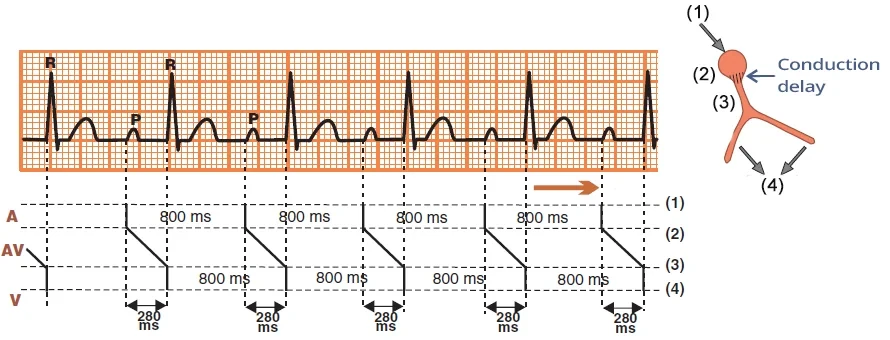
Block nhĩ thất độ I
- Khoảng PQ kéo dài: 0,28 giây (> 0,2 giây)
- Do dẫn truyền kéo dài qua bộ nối nhĩ thất (nút nhĩ thất)
- Nhịp xoang
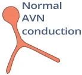

Nhịp xoang
- Tần số tim: 60/phút
- Sóng P sinh lý
- Dương (I, II)
- Âm (aVR)
- Khoảng PQ bình thường (0,18 giây)
- Phức bộ QRS bình thường (0,1 giây)
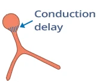
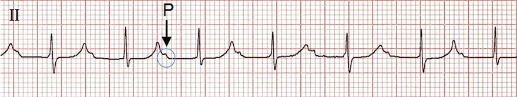
Block nhĩ thất độ I
- Khoảng PQ kéo dài 0,28 giây (> 0,2 giây)
- Sóng P lẫn vào trong sóng T
- Nhịp xoang
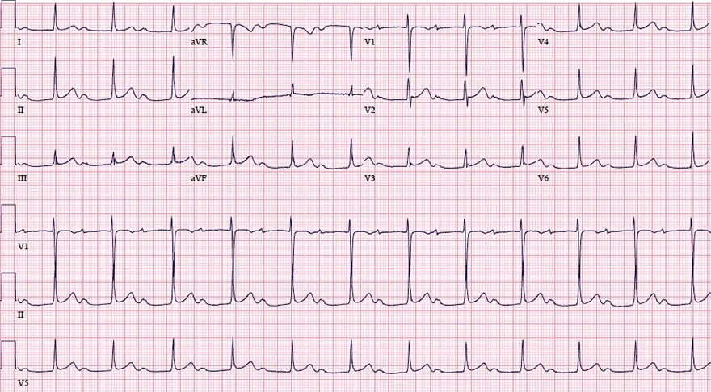
Block nhĩ thất độ I
- Khoảng PQ kéo dài 0,43 giây (> 0,2 giây)
- Sóng P đi sát ngay sau sóng T
- Nhịp xoang
- Tần số tim: 75/phút
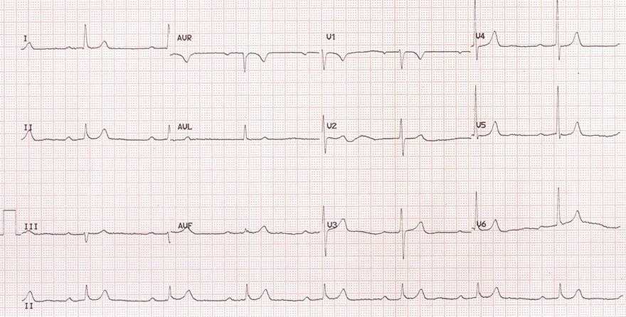
Block nhĩ thất độ I và nhịp chậm xoang
- Khoảng PQ kéo dài 0,32 giây (> 0,2 giây)
- Nhịp chậm xoang
- Tần số tim: 47/phút (< 50/phút)
- Trong trường hợp block nhĩ thất độ I kèm nhịp chậm xoang, cần nghĩ tới:
- Quá liều thuốc chẹn beta hoặc thuốc chẹn kênh canxi
- Nhồi máu cơ tim thành dưới
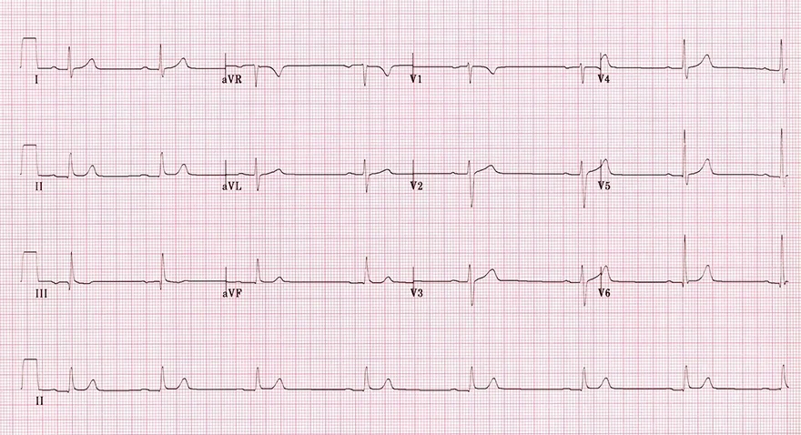
Block nhĩ thất độ I và nhịp chậm xoang
- Khoảng PQ kéo dài 0,24 giây (> 0,2 giây)
- Nhịp chậm xoang
- Tần số tim: 45/phút
- Trong trường hợp block nhĩ thất độ I kèm nhịp chậm xoang, cần nghĩ tới:
- Quá liều thuốc chẹn beta hoặc thuốc chẹn kênh canxi
- Nhồi máu cơ tim thành dưới
- Bệnh nhân này bị quá liều thuốc chẹn beta
8.2. Block nhĩ thất độ II — Mobitz I (Wenckebach) — ECG
Block nhĩ thất độ II, Mobitz I (Wenckebach)
Nút nhĩ thất (AV node)
- Trong nhịp xoang, các xung động được phát ra đều đặn (khoảng 60/phút) tại nút xoang
- Mỗi xung động lan qua hai tâm nhĩ (sóng P) tới nút nhĩ thất
- Xung động chậm lại tại nút nhĩ thất khoảng 0,1 giây
- Trong khoảng thời gian này, hai tâm nhĩ bơm máu xuống hai tâm thất
- Sau đó xung động tiếp tục đi xuống hai tâm thất (phức bộ QRS)
Khoảng PQ
- Khoảng PQ sinh lý là (0,12 – 0,2 giây)
- Khoảng PQ = sóng P (khoảng 0,08 giây) + đoạn PQ (khoảng 0,1 giây)
- Xung động bắt nguồn từ nút xoang
- Khi đi tới cơ tâm nhĩ, sóng P bắt đầu hình thành
- Đồng thời, xung động lan qua hệ thống dẫn truyền hướng về nút nhĩ thất
- Xung động đi trong hệ thống dẫn truyền không tạo ra sóng nào trên ECG
- Xung động đi vào nút nhĩ thất
- Xung động lan từ nút xoang
- Qua cơ tâm nhĩ (sóng P)
- Và qua hệ thống dẫn truyền (các đường liên nút) tới nút nhĩ thất
- Vào thời điểm hai tâm nhĩ khử cực (đỉnh sóng P)
- Xung động đi tới nút nhĩ thất qua hệ thống dẫn truyền
- Xung động lan từ nút xoang
- Dẫn truyền chậm dần (decremental conduction) trong nút nhĩ thất
- Xung động lưu lại trong nút nhĩ thất khoảng 0,1 giây (không tạo ra sóng nào)
- Sau đó xung động đi vào bó His (không tạo ra sóng nào)
- Khử cực vách liên thất
- Từ bó His, xung động đi qua các sợi Purkinje
- Bắt đầu khử cực mô cơ của vách liên thất
- Bắt đầu tạo ra sóng Q
- Từ bó His, xung động đi qua các sợi Purkinje
Hiện tượng Wenckebach
- Hiện tượng Wenckebach là một rối loạn của hệ thống dẫn truyền
- Trong đó dẫn truyền xung động kéo dài dần qua một đoạn nhất định của hệ thống dẫn truyền
- Cho tới khi xung động bị block, và chu kỳ lại lặp lại
- Đây là sự tiến triển bệnh lý có tính chu kỳ của dẫn truyền giảm dần (decremental conduction)
- Hiện tượng này được mô tả bởi bác sĩ nội khoa người Hà Lan Karel Frederik Wenckebach mà không cần đến ECG
- Ông bắt mạch quay của một phụ nữ than phiền mạch không đều
- Block xoang nhĩ độ II, type I (Wenckebach)
- Là hiện tượng dẫn truyền kéo dài dần qua nút xoang (các tế bào T)
- Block nhĩ thất độ II, Mobitz I (Wenckebach)
- Là hiện tượng dẫn truyền kéo dài dần qua nút nhĩ thất
Block nhĩ thất độ II — Mobitz I (Wenckebach)
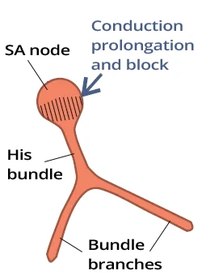
- Dẫn truyền của mỗi xung động kế tiếp
- Kéo dài dần qua nút nhĩ thất
- Cho tới khi xung động bị block tại nút nhĩ thất
- Sau đó chu kỳ lặp lại
- Trên ECG, khoảng PQ kéo dài dần
- Cho tới khi sau sóng P không còn phức bộ QRS nào theo sau
- Sau đó chu kỳ lặp lại
- Khi rối loạn nằm ở nút nhĩ thất
- Hiện tượng Wenckebach xảy ra tại nút nhĩ thất
- Dẫn truyền kéo dài dần cho tới khi bị block — Mobitz I
- Khi rối loạn nằm dưới nút (bó His)
- Hiện tượng Wenckebach không xảy ra
- Quy luật "tất cả hoặc không có gì" ("all or nothing") được áp dụng
- Xung động hoặc được dẫn truyền, hoặc bị block
- Block toàn bộ các xung động là block nhĩ thất độ III
ECG và block nhĩ thất độ II — Mobitz I (Wenckebach)
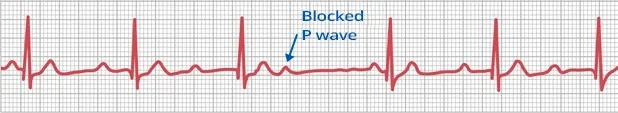
- Khoảng PP luôn luôn bằng nhau
- Vì nút xoang phát xung động đều đặn (nhịp xoang)
- Khoảng PQ kéo dài dần
- Dần dần, nút nhĩ thất "mỏi" cho tới khi sóng P không được dẫn truyền (sau sóng P không có phức bộ QRS nào theo sau)
- Khoảng PQ sau khoảng nghỉ RR ngắn hơn khoảng PQ trước khoảng nghỉ
Block nhĩ thất độ II, Mobitz I (Wenckebach)
- Khoảng PP luôn bằng nhau (nhịp xoang)
- Khoảng PQ kéo dài dần (hiện tượng Wenckebach)
- Sau sóng P thứ 4, không có phức bộ QRS nào theo sau
- Khoảng PQ sau khoảng nghỉ ngắn hơn khoảng PQ trước khoảng nghỉ
- Dẫn truyền xuống thất là (4:3)
- Trong 4 sóng P, 3 sóng P được dẫn truyền xuống thất
- Vì có 3 phức bộ QRS, sau đó chu kỳ lặp lại
Nhịp xoang
- Laddergram minh hoạ đường lan truyền của xung động qua hệ thống dẫn truyền
- A – tâm nhĩ, AV – bộ nối nhĩ thất, V – tâm thất
- Khoảng PQ: 0,16 giây
- Khi bộ nối nhĩ thất (nút nhĩ thất) bình thường, khoảng PQ là 0,12 – 0,2 giây
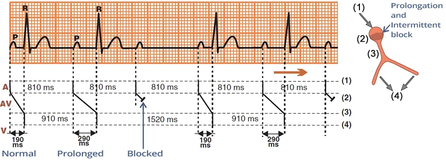
Block nhĩ thất độ II — Mobitz I (Wenckebach)
- Khoảng PP hằng định: 810 ms (nhịp xoang)
- Khoảng PQ kéo dài dần cho tới khi sóng P không được dẫn truyền
- PQ thứ 1 (190 ms)
- PQ thứ 2 (290 ms)
- Sóng P thứ 3 bị block
- Sau đó chu kỳ lặp lại
- Dẫn truyền xuống thất là (3:2)
- Trong 3 sóng P, 2 sóng P được dẫn truyền xuống thất (tạo ra 2 phức bộ QRS), sau đó chu kỳ lặp lại
Block nhĩ thất độ II (Mobitz I, Mobitz II)
- Woldemar Mobitz
- Là bác sĩ người Nga làm việc với tư cách bác sĩ tim mạch tại Đức
- Năm 1924, ông mô tả block nhĩ thất độ II trên ECG và chia thành 2 type (Mobitz I, II)
- Mobitz I (Wenckebach)
- Thường được gọi là Wenckebach
- Vì hiện tượng Wenckebach xảy ra tại nút nhĩ thất
- Mobitz II (Hay)
- John Hay là bác sĩ người Anh, năm 1906 đã mô tả thể block nhĩ thất độ II này dựa trên mạch (không có ECG)
- Về sau Mobitz mô tả chi tiết hơn và thể này thường được gọi là Mobitz II, hiếm khi gọi là Hay
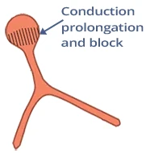
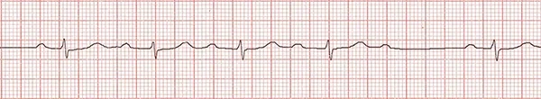
Block nhĩ thất độ II (Mobitz I)
- Rối loạn nằm ở nút nhĩ thất
- Mobitz I có đặc trưng là hiện tượng Wenckebach:
- Khoảng PQ kéo dài dần
- Cho tới khi sóng P thứ 5 bị block, sau đó chu kỳ lặp lại
- Dẫn truyền xuống thất là (5:4)
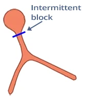
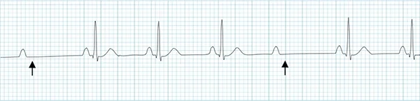
Block nhĩ thất độ II (Mobitz II)
- Rối loạn nằm dưới nút (bên dưới nút nhĩ thất)
- Khoảng PQ giữ nguyên không đổi (không có hiện tượng Wenckebach)
- Block nhĩ thất độ II, Mobitz II
- Bất kỳ sóng P nào cũng có thể bị block từng lúc (mà khoảng PQ không kéo dài)
- Vùng dưới nút của bộ nối nhĩ thất block xung động từng lúc
- Dẫn truyền xuống thất là (4:3)
Dẫn truyền xuống thất
- Nhịp xoang có dẫn truyền xuống thất 1:1 (P:QRS)
- Sau mỗi sóng P đều có một phức bộ QRS
- Trong block nhĩ thất độ II, một số sóng P bị block (tại nút nhĩ thất)
- Do đó dẫn truyền xuống thất không còn là 1:1
- Block nhĩ thất độ II — Mobitz I thường có dẫn truyền xuống thất là: 3:2, 4:3, 5:4
- Dẫn truyền xuống thất thay đổi nghĩa là tỉ lệ dẫn truyền xuống thất thay đổi trên ECG, ví dụ:
- Block nhĩ thất độ II — Mobitz I với dẫn truyền xuống thất thay đổi (3:2) và (4:3)
- Block nhĩ thất độ II với dẫn truyền xuống thất (2:1)
- Là Mobitz I hay Mobitz II?
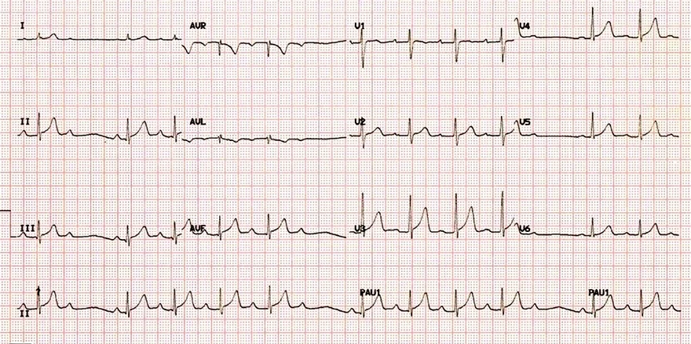
Block nhĩ thất độ II — Mobitz I (Wenckebach)
- Khoảng PP hằng định
- Khoảng PQ kéo dài dần
- Cho tới khi sóng P bị block
- Sau đó chu kỳ lặp lại
- Dẫn truyền xuống thất là 5:4
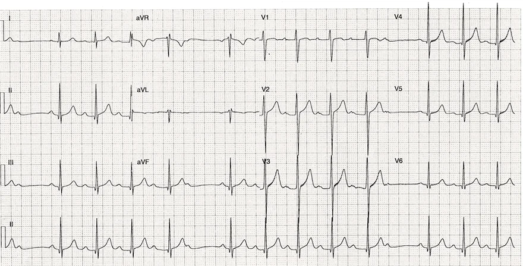
Block nhĩ thất độ II — Mobitz I (Wenckebach)
- Khoảng PP hằng định
- Khoảng PQ kéo dài dần
- Cho tới khi sóng P bị block
- Sau đó chu kỳ lặp lại
- Dẫn truyền xuống thất thay đổi (5:4) và (6:5)
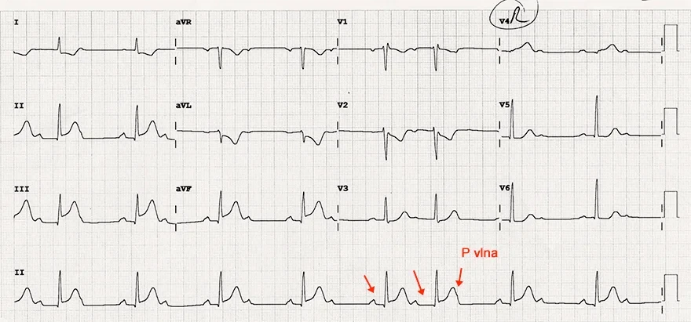
Block nhĩ thất độ II — Mobitz I (Wenckebach) và STEMI thành dưới
- STEMI thành dưới (nhồi máu cơ tim có ST chênh lên — ST-Elevation Myocardial Infarction)
- ST chênh lên ở các chuyển đạo thành dưới (II, III, aVF)
- Nhồi máu thành dưới thường dẫn tới tổn thương thiếu máu cục bộ ở nút nhĩ thất
- Gây ra block nhĩ thất ở nhiều mức độ khác nhau
- Chuyển đạo II ghi liên tục có dẫn truyền xuống thất (2:1)
- Chưa rõ khoảng PQ có kéo dài hay không vì cứ mỗi sóng P thứ 2 lại bị block. Có thể là:
- Mobitz I
- Mobitz II
- Khoảng PQ thứ 5 và thứ 6 kéo dài cho tới khi sóng P bị block (ẩn trong sóng T)
- Đây là block nhĩ thất độ II — Mobitz I với dẫn truyền thay đổi 2:1 và 3:2
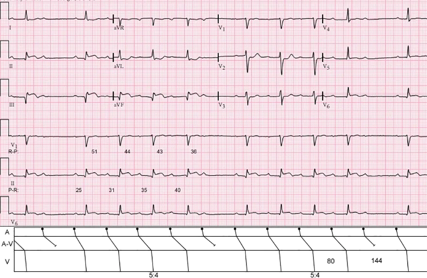
Block nhĩ thất độ II — Mobitz I (Wenckebach)
- Laddergram minh hoạ đường lan truyền của xung động qua hệ thống dẫn truyền
- A – tâm nhĩ, AV – bộ nối nhĩ thất, V – tâm thất
- Khoảng PP hằng định
- Khoảng PQ kéo dài dần
- Cho tới khi sóng P bị block
- Sau đó chu kỳ lặp lại
- Dẫn truyền xuống thất là (5:4)
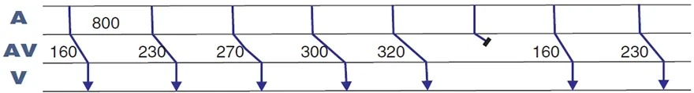
Block nhĩ thất độ II — Mobitz I (Wenckebach)
- Khoảng PP hằng định (800 ms)
- Khoảng PQ kéo dài dần (160 ms… 320 ms)
- Cho tới khi sóng P bị block
- Sau đó chu kỳ lặp lại
- Dẫn truyền xuống thất là (6:5)
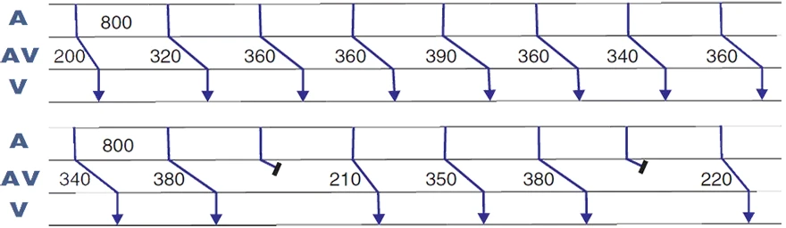
Block nhĩ thất độ II không điển hình — Mobitz I (Wenckebach)
- Trên ECG là một bản ghi ECG liên tục (chia làm 2 dòng)
- Khoảng PP hằng định (800 ms)
- Khoảng PQ kéo dài không đều đặn
- Cho tới khi sóng P bị block
- Sau đó chu kỳ lặp lại
- Dẫn truyền xuống thất không đều
- Khoảng PQ trước sóng P bị block dài hơn
- So với khoảng PQ sau sóng P bị block
- Đây là block nhĩ thất độ II không điển hình — Mobitz I (Wenckebach)
- Vì khoảng PQ kéo dài không đều đặn
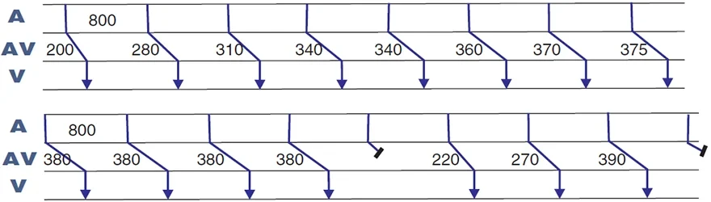
Block nhĩ thất độ II — Mobitz I (Wenckebach)
- Trên ECG là một bản ghi ECG liên tục (chia làm 2 dòng)
- Khoảng PP hằng định (800 ms)
- Khoảng PQ kéo dài không đều đặn
- Một số khoảng PQ giữ nguyên và không kéo dài
- Sóng P bị block
- Sau đó chu kỳ lặp lại
- Dẫn truyền xuống thất không đều
- Khoảng PQ trước sóng P bị block dài hơn
- So với khoảng PQ sau sóng P bị block
- Đây là block nhĩ thất độ II không điển hình — Mobitz I (Wenckebach)
- Vì khoảng PQ kéo dài không đều đặn
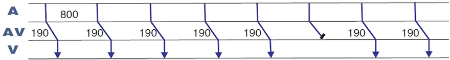
- Khoảng PP hằng định (800 ms)
- Khoảng PQ hằng định (190 ms)
- Khoảng PQ sau sóng P bị block KHÔNG ngắn hơn
- So với khoảng PQ trước sóng P bị block
- Đây là block nhĩ thất độ II — Mobitz II
- Vì khoảng PQ VẪN hằng định, ngay cả sau một sóng P bị block
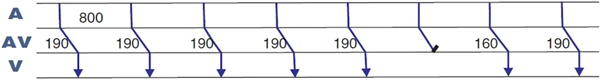
Block nhĩ thất độ II — Mobitz I (Wenckebach)
- Khoảng PP hằng định (800 ms)
- Khoảng PQ hằng định (190 ms)
- Ngoại trừ khoảng PQ sau sóng P bị block (160 ms)
- Khoảng PQ sau sóng P bị block CÓ ngắn hơn
- So với khoảng PQ trước sóng P bị block
- Khoảng PQ sau sóng P bị block (160 ms) ngắn hơn
- 30 ms so với PQ trước sóng P bị block
- Đây là block nhĩ thất độ II — Mobitz I (Wenckebach)
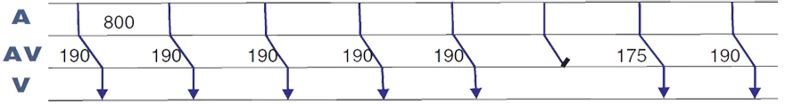
Block nhĩ thất độ II — Mobitz I (Wenckebach)
- Khoảng PP hằng định (800 ms)
- Khoảng PQ hằng định (190 ms)
- Ngoại trừ khoảng PQ sau sóng P bị block (175 ms)
- Khoảng PQ sau sóng P bị block CÓ ngắn hơn
- So với khoảng PQ trước sóng P bị block
- Khoảng PQ sau sóng P bị block (175 ms) ngắn hơn
- 15 ms so với PQ trước sóng P bị block
- Một số tiêu chuẩn cho phép dung sai 20 ms
- Và có thể xếp block nhĩ thất này là Mobitz II
- Đây là block nhĩ thất độ II — Mobitz I (Wenckebach)
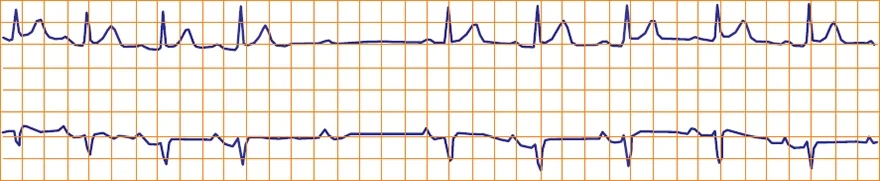
Block nhĩ thất độ II — Mobitz I (Wenckebach)
- Khoảng PP hằng định
- Khoảng PQ hằng định
- Tuy nhiên, khoảng PQ sau sóng P bị block lại ngắn hơn
- Nếu không có laddergram thì khó đánh giá hơn
- Đây là block nhĩ thất độ II — Mobitz I (Wenckebach)
- Nếu khoảng PQ sau sóng P bị block bằng đúng
- Khoảng PQ trước sóng P bị block, thì sẽ được xếp là Mobitz II
- Nếu khoảng PQ sau sóng P bị block bằng đúng
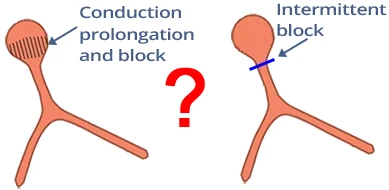
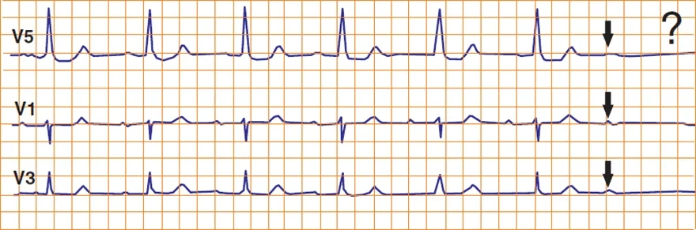
Block nhĩ thất độ II — không phân loại được
- Khoảng PP hằng định
- Khoảng PQ hằng định
- Trên ECG, không nhìn thấy được khoảng PQ sau sóng P bị block
- Nếu khoảng PQ sau sóng P bị block:
- Ngắn lại — sẽ là Mobitz I
- Không đổi — sẽ là Mobitz II
- Nếu khoảng PQ sau sóng P bị block:
8.3. Block nhĩ thất độ II — Mobitz II — ECG
Block nhĩ thất độ II, Mobitz II
Nút nhĩ thất (AV node)
- Trong nhịp xoang, các xung động được phát ra đều đặn (khoảng 60/phút) tại nút xoang
- Mỗi xung động đi qua hai tâm nhĩ (sóng P) tới nút nhĩ thất
- Tại nút nhĩ thất, xung động chậm lại khoảng 0,1 giây
- Trong thời gian chậm trễ này, hai tâm nhĩ có đủ thời gian bơm máu xuống hai tâm thất
- Sau đó xung động tiếp tục đi xuống hai tâm thất (phức bộ QRS)
Khoảng PQ
- Khoảng PQ sinh lý nằm trong khoảng (0,12 – 0,2 giây)
- Khoảng PQ = sóng P (khoảng 0,08 giây) + đoạn PQ (khoảng 0,1 giây)
- Xung động bắt nguồn từ nút xoang
- Khi đi tới cơ tâm nhĩ, sóng P bắt đầu hình thành
- Đồng thời, xung động đi qua hệ thống dẫn truyền hướng về nút nhĩ thất
- Xung động trong hệ thống dẫn truyền không tạo ra sóng nào trên ECG
- Xung động đi vào nút nhĩ thất
- Xung động lan truyền từ nút xoang
- Qua cơ tâm nhĩ (sóng P)
- Và qua hệ thống dẫn truyền (các đường liên nút) tới nút nhĩ thất
- Vào thời điểm hai tâm nhĩ khử cực (đỉnh sóng P)
- Xung động đi tới nút nhĩ thất qua hệ thống dẫn truyền
- Xung động lan truyền từ nút xoang
- Dẫn truyền chậm dần (decremental conduction) trong nút nhĩ thất
- Xung động "lưu lại" trong nút nhĩ thất khoảng 0,1 giây (không tạo ra sóng nào)
- Sau đó xung động đi tới bó His (không tạo ra sóng nào)
- Khử cực vách liên thất
- Từ bó His, xung động đi qua các sợi Purkinje
- Bắt đầu khử cực cơ vách liên thất
- Khởi phát sóng Q
- Từ bó His, xung động đi qua các sợi Purkinje
Block nhĩ thất độ II — Mobitz II
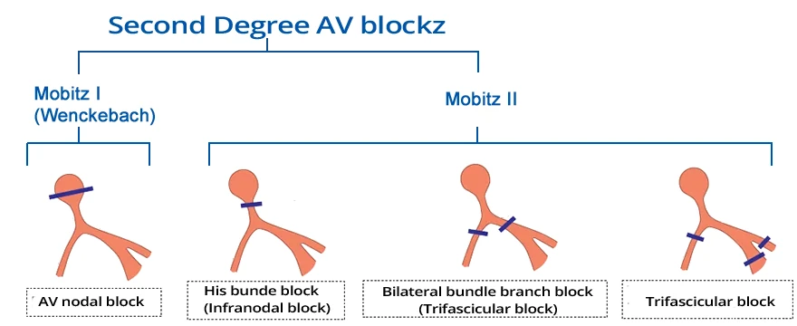
- Đây là hiện tượng block xung động từng lúc, luôn luôn nằm dưới nút (bên dưới nút nhĩ thất)
- Xung động có thể bị block dưới nút ở 3 vị trí:
- Bó His (trong bó His)
- Ở đoạn đầu các nhánh Tawara
- Ở nhánh Tawara phải và ở các phân nhánh (fascicles)
- Khi rối loạn nằm ở nút nhĩ thất, hiện tượng Wenckebach xảy ra: block nhĩ thất độ II — Mobitz I — Wenckebach
- Dẫn truyền xung động qua nút nhĩ thất kéo dài dần
- Cho tới khi xung động bị block. Sau đó chu kỳ lặp lại
- Khi rối loạn nằm dưới nút (bên dưới nút nhĩ thất), sẽ xuất hiện block nhĩ thất độ II — Mobitz II
- Nguyên tắc "tất cả hoặc không có gì" được áp dụng: xung động hoặc được dẫn truyền, hoặc bị block
- Block toàn bộ các xung động là block nhĩ thất độ III (nhĩ và thất bị cô lập hoàn toàn với nhau)
- Block nhĩ thất độ II — Mobitz II
- Nguy hiểm hơn Mobitz I
- Nó có thể tiến triển thành block nhĩ thất độ III (nhĩ và thất bị cô lập hoàn toàn với nhau)
- Bệnh nhân Mobitz II có chỉ định cấy máy tạo nhịp (pacemaker)
- Mobitz I không cần máy tạo nhịp
- Nguy hiểm hơn Mobitz I
ECG và block nhĩ thất độ II — Mobitz II
- Khoảng PP luôn luôn bằng nhau
- Nút xoang phát xung động đều đặn (nhịp xoang)
- Khoảng PQ luôn luôn bằng nhau
- Từng lúc, sóng P bị block
- Sau một sóng P bị block không có phức bộ QRS nào theo sau
- Khoảng nghỉ RR đúng bằng hai lần khoảng RR
Block nhĩ thất độ II — Mobitz II
- Khoảng PP luôn bằng nhau
- Khoảng PQ luôn bằng nhau
- Sau sóng P thứ 1 và thứ 5 không có phức bộ QRS nào theo sau
- Vì xung động đã bị block ở vùng dưới nút (trong bó His)
- Dẫn truyền xuống thất là (4:3)
- Trong 4 sóng P, 3 sóng P được dẫn truyền xuống thất (tạo ra 3 phức bộ QRS), sau đó chu kỳ lặp lại
Nhịp xoang
- Laddergram minh hoạ đường lan truyền của xung động qua hệ thống dẫn truyền
- A – tâm nhĩ, AV – bộ nối nhĩ thất, V – tâm thất
- Khoảng PQ: 0,16 giây
- Khi bộ nối nhĩ thất (nút nhĩ thất) còn nguyên vẹn, khoảng PQ là 0,12 – 0,20 giây
- Sau một sóng P luôn có một phức bộ QRS
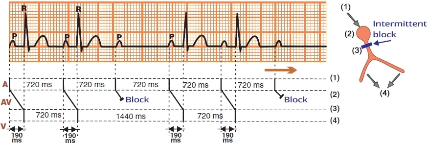
Block nhĩ thất độ II — Mobitz II
- Khoảng PP hằng định (720 ms)
- Khoảng PQ hằng định (190 ms)
- Cứ mỗi sóng P thứ 3 lại bị block trong bó His
- Không có phức bộ QRS nào theo sau
- Dẫn truyền xuống thất là (3:2)
- Trong 3 sóng P, 2 sóng P được dẫn truyền xuống thất (tạo ra 2 phức bộ QRS), sau đó chu kỳ lặp lại
Block nhĩ thất độ II (Mobitz I, Mobitz II)
- Woldemar Mobitz
- Là bác sĩ người Nga làm việc với tư cách bác sĩ tim mạch tại Đức
- Năm 1924, ông mô tả block nhĩ thất độ II trên ECG và chia thành 2 type (Mobitz I, II)
- Mobitz I (Wenckebach)
- Thường được gọi là Wenckebach
- Vì hiện tượng Wenckebach xảy ra tại nút nhĩ thất
- Mobitz II (Hay)
- John Hay là bác sĩ người Anh, năm 1906 đã mô tả thể block nhĩ thất độ II này dựa trên mạch (không có ECG)
- Về sau Mobitz mô tả chi tiết hơn; thể này thường được gọi là Mobitz II, hiếm khi gọi là Hay
Block nhĩ thất độ II (Mobitz I)
- Rối loạn nằm ở nút nhĩ thất
- Mobitz I có đặc trưng là hiện tượng Wenckebach:
- Khoảng PQ kéo dài dần
- Cho tới khi sóng P thứ 5 bị block, sau đó chu kỳ lặp lại
- Dẫn truyền xuống thất là (5:4)
Block nhĩ thất độ II (Mobitz II)
- Rối loạn nằm dưới nút (bên dưới nút nhĩ thất)
- Khoảng PQ giữ nguyên không đổi (không có hiện tượng Wenckebach)
- Block nhĩ thất độ II, Mobitz II
- Bất kỳ sóng P nào cũng có thể bị block từng lúc (mà khoảng PQ không kéo dài)
- Vùng dưới nút của bộ nối nhĩ thất block xung động từng lúc
- Dẫn truyền xuống thất là (4:3)
Phức bộ QRS hẹp (< 0,12 giây)
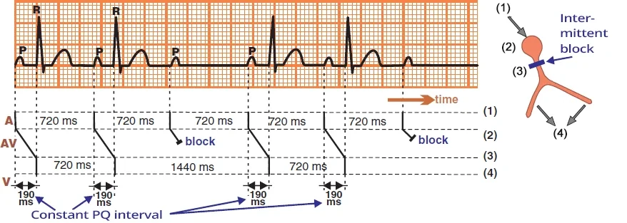
Phức bộ QRS hẹp (< 0,12 giây)
- Đây là block nhĩ thất độ II — Mobitz II tại bó His
- 25% block nhĩ thất Mobitz II có phức bộ QRS hẹp (< 0,12 giây)
- Hai tâm thất (phức bộ QRS hẹp) được khử cực qua hệ thống dẫn truyền giống như trong nhịp xoang
- Có hiện tượng block xung động từng lúc tại bó His
- Trên ECG biểu hiện bằng các sóng P bị block (không có phức bộ QRS theo sau)
Phức bộ QRS rộng (> 0,12 giây)
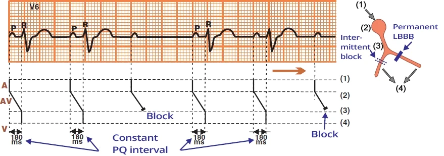
Phức bộ QRS rộng (> 0,12 giây)
- Đây là block nhĩ thất độ II — Mobitz II dưới bó His (infra-Hisian)
- 75% block nhĩ thất Mobitz II có phức bộ QRS rộng (> 0,12 giây)
- Mobitz II có thể block xung động ở dưới bó His: ở mức các nhánh Tawara hoặc các phân nhánh
- Khả năng bị block từng lúc cùng lúc tại
- 2 vị trí (2 nhánh Tawara)
- 3 vị trí (2 phân nhánh và nhánh Tawara phải)
- Là rất nhỏ
- Bệnh nhân có phức bộ QRS rộng vì họ đã có sẵn từ trước:
- Block nhánh (block nhánh trái — LBBB, hoặc block nhánh phải — RBBB)
- Block hai phân nhánh (bifascicular block) (block nhánh phải + một phân nhánh)
- Trong nhịp xoang, xung động chỉ xuống được hai tâm thất qua một nhánh Tawara (phân nhánh) còn nguyên vẹn
- Trên ECG có phức bộ QRS rộng
- Từng lúc lại có block xung động ở chính nhánh Tawara (phân nhánh) chưa bị block
- Trên ECG biểu hiện bằng các sóng P bị block (không có phức bộ QRS theo sau)
Dẫn truyền xuống thất
- Nhịp xoang có dẫn truyền xuống thất 1:1 (P:QRS)
- Sau mỗi sóng P đều có một phức bộ QRS
- Trong block nhĩ thất độ II, một số sóng P bị block (tại nút nhĩ thất)
- Do đó dẫn truyền xuống thất không còn là 1:1
- Block nhĩ thất độ II — Mobitz II thường gặp nhất với dẫn truyền xuống thất: 3:2, 4:3, 5:4, 3:1, 4:1
- Dẫn truyền xuống thất thay đổi nghĩa là tỉ lệ dẫn truyền xuống thất thay đổi trên ECG, ví dụ:
- Block nhĩ thất độ II — Mobitz II với dẫn truyền xuống thất thay đổi (3:2) và (4:3)
- Block nhĩ thất độ II với dẫn truyền xuống thất (2:1)
- Là Mobitz I hay Mobitz II?
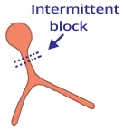
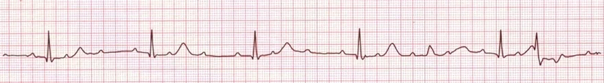
Block nhĩ thất độ II — Mobitz II (3:1)
- Khoảng PP không thay đổi
- Cứ sau mỗi sóng P thứ 3 lại có một phức bộ QRS hẹp
- Dẫn truyền xuống thất là 3:1
- Phức bộ QRS hẹp (< 0,12 giây)
- Đây là block nhĩ thất độ II — Mobitz II tại bó His
- Ngoài ra còn có block nhĩ thất độ I
- Khoảng PQ kéo dài (> 0,2 giây)
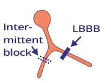
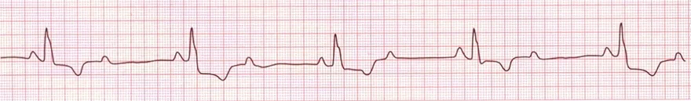
Block nhĩ thất độ II với dẫn truyền (2:1)
- Khoảng PP không thay đổi
- Cứ sau mỗi sóng P thứ 2 lại có một phức bộ QRS rộng
- Dẫn truyền xuống thất là 2:1
- Block nhĩ thất độ II với dẫn truyền (2:1) là một thách thức chẩn đoán
- Có thể là Mobitz I hoặc Mobitz II
- Phức bộ QRS rộng (> 0,12 giây)
- Điều này gợi ý nhiều hơn tới block nhĩ thất độ II — Mobitz II
- Block nhĩ thất độ II — Mobitz I ít có khả năng
- Vì thể này tạo ra phức bộ QRS hẹp (< 0,12 giây)
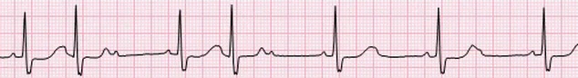
Block nhĩ thất độ II — Mobitz II (3:2 và 2:1)
- Khoảng PP không thay đổi
- Cứ mỗi sóng P thứ 3 hoặc thứ 2 lại bị block (một số sóng P ẩn trong sóng T)
- Có dẫn truyền xuống thất thay đổi 3:2 và 2:1
- Phức bộ QRS hẹp (< 0,12 giây)
- Điều này chỉ ra block nhĩ thất độ II — Mobitz II tại bó His
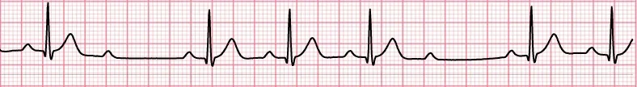
Block nhĩ thất độ II — Mobitz II (4:3)
- Khoảng PP không thay đổi
- Cứ mỗi sóng P thứ 4 lại bị block
- Dẫn truyền xuống thất là 4:3
- Phức bộ QRS hẹp (< 0,12 giây)
- Điều này chỉ ra block nhĩ thất độ II — Mobitz II tại bó His
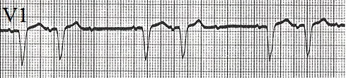
Block nhĩ thất độ II với dẫn truyền (3:2)
- Khoảng PP không thay đổi
- Cứ mỗi sóng P thứ 3 lại bị block
- Dẫn truyền xuống thất là 3:2
- Phức bộ QRS rộng (> 0,12 giây)
- Chỉ ra block nhĩ thất độ II — Mobitz II dưới bó His
- Bệnh nhân đã có sẵn từ trước block nhánh trái (deep S ở V1 — sóng S sâu ở V1)
- Và block từng lúc nhánh phải
Block nhĩ thất độ II — Mobitz I (Wenckebach)
- Khoảng PP hằng định
- Khoảng PQ kéo dài dần
- Cho tới khi một sóng P bị block
- Sau đó chu kỳ lặp lại
- Dẫn truyền xuống thất là 5:4
- Cứ mỗi sóng P thứ 5 lại bị block
- Rối loạn nằm ở nút nhĩ thất
- Đây là block nhĩ thất độ II — Mobitz I (Wenckebach)
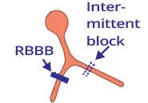
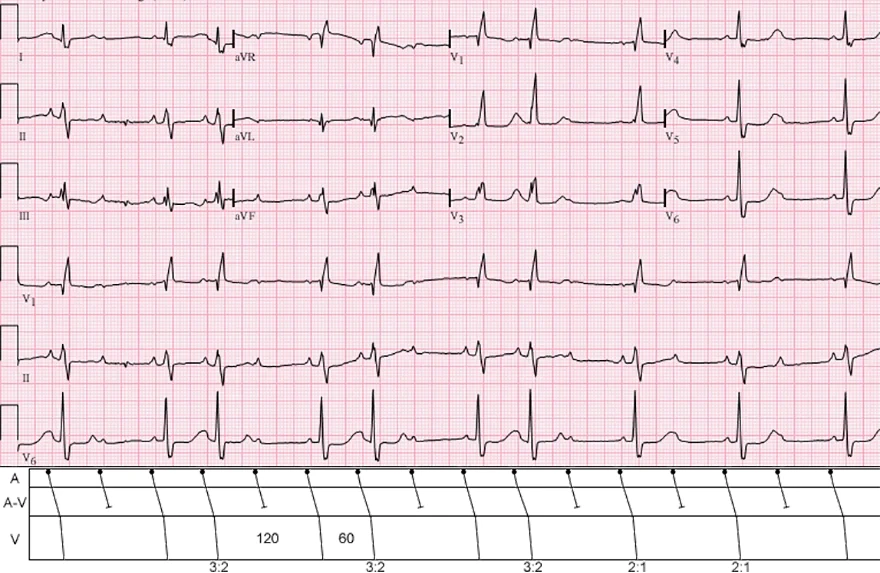
Block nhĩ thất độ II — Mobitz II
- Laddergram minh hoạ đường lan truyền của xung động qua hệ thống dẫn truyền
- A – tâm nhĩ, AV – bộ nối nhĩ thất, V – tâm thất
- Khoảng PP hằng định
- Khoảng PQ hằng định
- Cứ mỗi sóng P thứ 3 hoặc thứ 2 lại bị block
- Có dẫn truyền xuống thất thay đổi 3:2 và 2:1
- Phức bộ QRS rộng (> 0,12 giây) và có hình dạng của block nhánh phải (RBBB)
- Như vậy, xung động chỉ xuống được hai tâm thất qua nhánh trái
- Tại nhánh trái, xung động bị block từng lúc
- Thể hiện ở chỗ sau sóng P không có phức bộ QRS theo sau
- Block nhĩ thất độ II — Mobitz II xuất hiện là do
- Xung động bị block từng lúc ở nhánh trái
Block nhĩ thất độ II — Mobitz II
- Khoảng PP hằng định (800 ms)
- Khoảng PQ hằng định (190 ms)
- Khoảng PQ sau sóng P bị block bằng đúng khoảng PQ trước sóng P bị block
- Đây là block nhĩ thất độ II — Mobitz II
- Vì khoảng PQ giữ nguyên hằng định, ngay cả sau một sóng P bị block
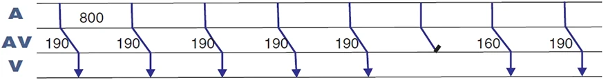
Block nhĩ thất độ II — Mobitz I (Wenckebach)
- Khoảng PP hằng định (800 ms)
- Khoảng PQ hằng định (190 ms), ngoại trừ khoảng PQ sau sóng P bị block (160 ms)
- Khoảng PQ sau sóng P bị block ngắn hơn khoảng PQ trước sóng P bị block
- Khoảng PQ sau sóng P bị block (160 ms) ngắn hơn 30 ms
- So với khoảng PQ trước sóng P bị block
- Khoảng PQ sau sóng P bị block (160 ms) ngắn hơn 30 ms
- Đây là block nhĩ thất độ II — Mobitz I (Wenckebach)
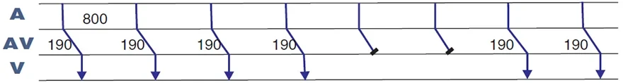
Block nhĩ thất độ II — Mobitz II
- Khoảng PP hằng định (800 ms)
- Khoảng PQ hằng định (190 ms)
- Khoảng PQ sau sóng P bị block bằng đúng
- Khoảng PQ trước sóng P bị block
- Đây là block nhĩ thất độ II — Mobitz II (cao độ)
- Vì có hai sóng P liên tiếp bị block
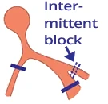
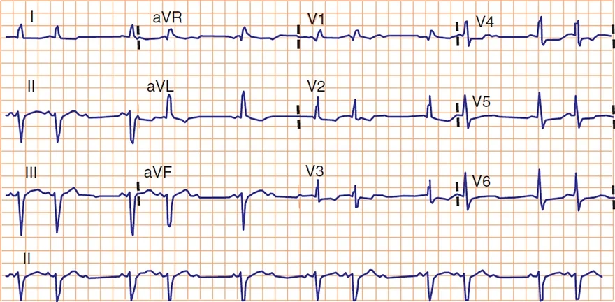
Block nhĩ thất độ II — Mobitz II
- ECG cho thấy block hai phân nhánh (bifascicular block)
- Block phân nhánh trái trước
- Block nhánh Tawara phải
- Hai tâm thất chỉ được khử cực qua phân nhánh trái sau
- Đây là block nhĩ thất độ II — Mobitz II
- Block xung động từng lúc (ở phân nhánh trái sau)
- Khoảng PP hằng định
- Khoảng PQ hằng định
- Dẫn truyền xuống thất là (3:2) và 1 lần (2:1)
Block nhĩ thất độ II — không phân loại được
- Khoảng PP hằng định
- Khoảng PQ hằng định
- Trên ECG không nhìn thấy được khoảng PQ sau sóng P bị block
- Nếu khoảng PQ sau sóng P bị block
- Ngắn lại — sẽ chỉ ra Mobitz I
- Không đổi — sẽ chỉ ra Mobitz II
- Nếu khoảng PQ sau sóng P bị block
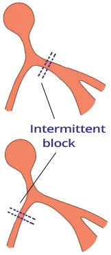

Block nhánh Tawara luân phiên
- Ở đầu bản ghi ECG có block nhánh Tawara trái (LBBB)
- Sau một ngoại tâm thu nhĩ
- Có sự chuyển đổi sang block nhánh Tawara phải (RBBB)
- Điều này chỉ ra tổn thương nặng của hệ thống dẫn truyền
- Cả hai nhánh Tawara đều bị tổn thương
- Khoảng PQ khi có LBBB dài hơn khoảng PQ khi có RBBB
- Điều này gợi ý rằng nhánh Tawara phải bị tổn thương nặng hơn
- Vì cần nhiều thời gian hơn để khử cực hai tâm thất
- Điều này gợi ý rằng nhánh Tawara phải bị tổn thương nặng hơn
- Bệnh nhân như vậy có thể tiến triển thành
- Block nhĩ thất độ II — Mobitz II
- Block nhĩ thất độ III
- Bệnh nhân có ECG như vậy có chỉ định cấy máy tạo nhịp
8.4. Block nhĩ thất độ II — dẫn truyền 2:1 — ECG
Block nhĩ thất độ II dẫn truyền 2:1, block nhĩ thất tỉ lệ cố định 2:1 (fixed-ratio 2:1 AV block)
Nút nhĩ thất (AV node)
- Trong nhịp xoang, các xung động được phát ra đều đặn (khoảng 60/phút) tại nút xoang
- Mỗi xung động lan qua hai tâm nhĩ (sóng P) tới nút nhĩ thất
- Xung động chậm lại tại nút nhĩ thất khoảng 0,1 giây
- Trong khoảng thời gian này, hai tâm nhĩ bơm máu xuống hai tâm thất
- Sau đó xung động tiếp tục đi xuống hai tâm thất (phức bộ QRS)
Khoảng PQ
- Khoảng PQ sinh lý là 0,12 – 0,2 giây
- Khoảng PQ = sóng P (khoảng 0,08 giây) + đoạn PQ (khoảng 0,1 giây)
- Xung động bắt nguồn từ nút xoang
- Khi đi tới cơ tâm nhĩ, sóng P bắt đầu hình thành
- Đồng thời, xung động lan qua hệ thống dẫn truyền hướng về nút nhĩ thất
- Xung động trong hệ thống dẫn truyền không tạo ra sóng nào trên ECG
- Xung động đi vào nút nhĩ thất
- Xung động lan truyền từ nút xoang
- Qua cơ tâm nhĩ (sóng P)
- Và qua hệ thống dẫn truyền (các đường liên nút) tới nút nhĩ thất
- Vào thời điểm hai tâm nhĩ khử cực (đỉnh sóng P)
- Xung động đi tới nút nhĩ thất qua hệ thống dẫn truyền
- Xung động lan truyền từ nút xoang
- Dẫn truyền chậm lại (decremental conduction) của nút nhĩ thất
- Xung động lưu lại trong nút nhĩ thất khoảng 0,1 giây (không tạo ra sóng nào)
- Sau đó xung động đi vào bó His (không tạo ra sóng nào)
- Khử cực vách liên thất
- Từ bó His, xung động đi qua các sợi Purkinje
- Bắt đầu khử cực cơ của vách liên thất
- Sóng Q bắt đầu hình thành
- Từ bó His, xung động đi qua các sợi Purkinje
Block nhĩ thất độ II (Mobitz I, Mobitz II)
- Woldemar Mobitz
- Là bác sĩ người Nga làm việc với tư cách bác sĩ tim mạch tại Đức
- Năm 1924, ông mô tả block nhĩ thất độ II trên ECG và chia thành 2 type (Mobitz I, II)
- Mobitz I (Wenckebach)
- Thường được gọi là Wenckebach
- Vì có hiện tượng Wenckebach tại nút nhĩ thất
- Mobitz II (Hay)
- John Hay là bác sĩ người Anh, năm 1906 đã mô tả thể block nhĩ thất độ II này dựa trên mạch (không có ECG)
- Về sau được Mobitz mô tả chi tiết hơn và thường được gọi là Mobitz II, hiếm khi gọi là Hay
Block nhĩ thất độ II — Mobitz I (Wenckebach)
- Mobitz I là rối loạn tại nút (rối loạn nằm ở nút nhĩ thất)
- Dẫn truyền xung động qua nút nhĩ thất kéo dài dần cho tới khi xung động bị block (hiện tượng Wenckebach)
- Hai tâm thất được khử cực qua hệ thống dẫn truyền (bó His, các nhánh…)
- Do đó, phức bộ QRS hẹp (< 0,12 giây)
- Trừ khi có dẫn truyền lệch hướng (aberrant conduction)
Block nhĩ thất độ II — Mobitz I (Wenckebach)
- Laddergram minh hoạ đường lan truyền của xung động qua hệ thống dẫn truyền
- A – tâm nhĩ, AV – bộ nối nhĩ thất, V – tâm thất
- Mobitz I là rối loạn của nút nhĩ thất (nơi có hiện tượng Wenckebach)
- Khoảng PP hằng định (810 ms) — nhịp xoang
- Phức bộ QRS hẹp (< 0,12 giây)
- Khoảng PQ kéo dài dần cho tới khi sóng P bị block (sau sóng P không có phức bộ QRS theo sau)
- PQ thứ 1 (190 ms)
- PQ thứ 2 (290 ms)
- Sóng P thứ 3 bị block
- Sau đó chu kỳ lặp lại
- Dẫn truyền xuống thất là (3:2)
- Trong 3 sóng P, 2 sóng P được dẫn truyền xuống thất (tạo ra 2 phức bộ QRS), sau đó chu kỳ lặp lại
Block nhĩ thất độ II — Mobitz II (QRS < 0,12 giây)
- Mobitz II là rối loạn dưới nút (ở đâu đó bên dưới nút nhĩ thất)
- 25% block nhĩ thất Mobitz II có phức bộ QRS hẹp (< 0,12 giây), nếu không có dẫn truyền lệch hướng
- Rối loạn nằm trong bó His
- Hiện tượng block xung động từng lúc xảy ra tại bó His
- Các xung động không bị block được dẫn truyền xuống hai tâm thất qua hệ thống dẫn truyền
- Do đó, phức bộ QRS hẹp (< 0,12 giây)
Block nhĩ thất độ II — Mobitz II
- Mobitz II là rối loạn dưới nút (bên dưới nút nhĩ thất)
- Khoảng PP luôn luôn bằng nhau (720 ms)
- Phức bộ QRS hẹp (< 0,12 giây)
- Khoảng PQ luôn luôn bằng nhau (190 ms), đây là điểm khác biệt chính so với Mobitz I (Wenckebach)
- Cứ mỗi sóng P thứ 3 lại bị block trong bó His
- Không có phức bộ QRS nào theo sau
- Dẫn truyền xuống thất là (3:2)
- Trong 3 sóng P, 2 sóng P được dẫn truyền xuống thất (tạo ra 2 phức bộ QRS), sau đó chu kỳ lặp lại
Block nhĩ thất độ II — Mobitz II (QRS > 0,12 giây)
- 75% block nhĩ thất Mobitz II có phức bộ QRS rộng (> 0,12 giây)
- Vì đây là block dưới bó His (bên dưới bó His)
Block nhĩ thất độ II — Mobitz II
- Đây là block nhĩ thất độ II — Mobitz II dưới bó His
- 75% Mobitz II có phức bộ QRS rộng (> 0,12 giây)
- Mobitz II có thể block xung động ở dưới bó His: ở mức các nhánh hoặc các phân nhánh
- Khả năng có block từng lúc cùng lúc tại
- 2 vị trí (2 nhánh)
- 3 vị trí (2 phân nhánh và nhánh phải)
- Là rất nhỏ
- Bệnh nhân có phức bộ QRS rộng vì họ đã có sẵn từ trước:
- Block nhánh (LBBB, hoặc RBBB)
- Block hai phân nhánh (RBBB + một phân nhánh)
- Trong nhịp xoang, xung động chỉ xuống được hai tâm thất qua một nhánh (phân nhánh) còn nguyên vẹn
- Trên ECG có phức bộ QRS rộng
- Từng lúc lại có block xung động ở chính nhánh (phân nhánh) chưa bị block
- Trên ECG ta thấy dưới dạng các sóng P bị block (không có phức bộ QRS theo sau)
- Khoảng PQ luôn luôn bằng nhau (180 ms), đây là điểm khác biệt chính so với Mobitz I (Wenckebach)
- Cứ mỗi sóng P thứ 3 lại bị block bên dưới bó His
- Không có phức bộ QRS nào theo sau
- Dẫn truyền xuống thất là (3:2)
- Trong 3 sóng P, 2 sóng P được dẫn truyền xuống thất (tạo ra 2 phức bộ QRS), sau đó chu kỳ lặp lại
Block nhĩ thất độ II với dẫn truyền (2:1)
Block nhĩ thất độ II với dẫn truyền (2:1)
- Dẫn truyền xuống thất là 2:1 (cứ mỗi sóng P thứ hai lại bị block — mũi tên xanh)
- Với dẫn truyền 2:1, câu hỏi đặt ra là Mobitz I hay Mobitz II?
- Ta không biết khoảng PQ có đang kéo dài hay không (Mobitz I), hay cứ mỗi sóng P thứ hai lại bị block (Mobitz II)
Chẩn đoán phân biệt — block nhĩ thất độ II (2:1)
- Cho bệnh nhân ghi ECG kéo dài
- Trên bản ghi ECG kéo dài, sớm muộn cũng sẽ xuất hiện một tỉ lệ dẫn truyền xuống thất khác (2:1)
- Block nhĩ thất độ II — Mobitz I (rối loạn tại nút)
- Tạo ra phức bộ QRS hẹp vì xung động xuống hai tâm thất qua bộ nối nhĩ thất và qua hệ thống dẫn truyền
- Phức bộ QRS rộng có thể gặp khi có dẫn truyền lệch hướng
- Tại nút nhĩ thất có hiện tượng Wenckebach (khoảng PQ kéo dài dần cho tới khi sóng P không được dẫn truyền)
- Tạo ra phức bộ QRS hẹp vì xung động xuống hai tâm thất qua bộ nối nhĩ thất và qua hệ thống dẫn truyền
- Block nhĩ thất độ II — Mobitz II (rối loạn dưới nút)
- 75% Mobitz II tạo ra QRS rộng (rối loạn dưới bó His)
- Bệnh nhân đã có sẵn từ trước block nhánh (LBBB, RBBB), hoặc block hai phân nhánh
- Do đó phức bộ QRS rộng
- Bệnh nhân đã có sẵn từ trước block nhánh (LBBB, RBBB), hoặc block hai phân nhánh
- 25% Mobitz II tạo ra QRS hẹp (rối loạn tại bó His)
- Hệ thống dẫn truyền, ngoại trừ bó His, còn nguyên vẹn
- 75% Mobitz II tạo ra QRS rộng (rối loạn dưới bó His)
- Khoảng PQ trong block nhĩ thất độ II (2:1)
- Mobitz I có khoảng PQ kéo dài (gần như luôn luôn, nhưng không phải là quy luật)
- Mobitz II có khoảng PQ không kéo dài
- Dùng atropin trong block nhĩ thất độ II (2:1)
- Atropin là thuốc huỷ phó giao cảm, nó làm tăng tần số nút xoang và tăng tốc dẫn truyền qua nút nhĩ thất
- Mobitz I cải thiện
- Đây là rối loạn của nút nhĩ thất và atropin tác động lên nút nhĩ thất
- Dẫn truyền qua nút nhĩ thất tăng lên, hiện tượng Wenckebach giảm đi
- Block (2:1) trở thành block nhẹ hơn (3:2, 4:3, 5:4)
- Mobitz II nặng lên
- Đây là rối loạn dưới nút, không phải rối loạn của nút nhĩ thất, mà atropin lại tác động lên nút nhĩ thất
- Mobitz II (2:1) có thể không đáp ứng với atropin, dẫn truyền xuống thất vẫn giữ (2:1)
- Sau khi dùng atropin, tần số nút xoang tăng lên và hệ thống dẫn truyền bên dưới bộ nối nhĩ thất bị quá tải về tần số
- Khi tần số tăng, thời kỳ trơ (dẫn truyền giảm dần) kéo dài ra
- Và block nhĩ thất có thể nặng lên (3:1, 4:1, 5:1), cho tới khi tiến triển thành block nhĩ thất hoàn toàn (độ III)
- Xoa xoang cảnh trong block nhĩ thất độ II (2:1)
- Xoa xoang cảnh ức chế nút nhĩ thất (làm chậm dẫn truyền qua nút nhĩ thất) và làm giảm tần số nút xoang
- Mobitz I nặng lên
- Đây là rối loạn của nút nhĩ thất và xoa xoang cảnh lại ức chế nút nhĩ thất
- Block (2:1) trở thành block nặng hơn (3:1, 4:1, 5:1)
- Mobitz II cải thiện
- Đây là rối loạn dưới nút, không phải rối loạn của nút nhĩ thất, mà xoa xoang cảnh lại ức chế nút nhĩ thất
- Tần số nút xoang giảm xuống và dẫn truyền qua nút nhĩ thất kéo dài ra
- Hệ thống dẫn truyền bên dưới nút nhĩ thất (nơi có rối loạn Mobitz II)
- Bớt bị quá tải nhờ tần số thấp hơn
- Do đó Mobitz II có thể cải thiện, block (2:1) trở thành (3:2, 4:3, 5:4)
Block nhĩ thất độ II với dẫn truyền (2:1)
- Phức bộ QRS hẹp (< 0,12 giây)
- Gợi ý Mobitz I, rất hiếm khi là Mobitz II
- Khoảng PQ kéo dài (> 0,2 giây)
- Gợi ý Mobitz I
- Nhiều khả năng nhất đây là block nhĩ thất độ II — Mobitz I
Block nhĩ thất độ II với dẫn truyền (2:1)
- Cứ mỗi sóng P thứ hai lại bị block
(mũi tên xanh) - Phức bộ QRS hẹp (< 0,12 giây)
- Gợi ý Mobitz I, rất hiếm khi là Mobitz II
- Khoảng PQ không kéo dài (< 0,2 giây)
- Gợi ý nhiều hơn tới Mobitz II
- Nhiều khả năng nhất đây là block nhĩ thất độ II — Mobitz I (phức bộ QRS hẹp)
Block nhĩ thất độ II với dẫn truyền (2:1)
- Phức bộ QRS hẹp (< 0,12 giây)
- Gợi ý Mobitz I, rất hiếm khi là Mobitz II
- Khoảng PQ kéo dài (> 0,2 giây)
- Gợi ý Mobitz I
- Nhiều khả năng nhất đây là block nhĩ thất độ II — Mobitz I
- Về sau bệnh nhân này được ghi ECG kéo dài
Block nhĩ thất độ II — Mobitz I (Wenckebach)
- Đây là bản ghi ECG kéo dài của chính bệnh nhân nói trên
- Chú ý phức bộ QRS thứ 5 và thứ 6
- Khoảng PQ kéo dài dần cho tới khi một sóng P bị block, không có QRS theo sau (sóng P bị block ẩn trong sóng T)
- Đây là block nhĩ thất độ II — Mobitz I (Wenckebach) (vì khoảng PQ kéo dài dần)
Block nhĩ thất độ II với dẫn truyền (2:1)
- Phức bộ QRS rộng (> 0,12 giây), gợi ý Mobitz II
- Khoảng PQ không kéo dài (< 0,2 giây), hướng nhiều hơn tới Mobitz II
- Theo laddergram, đây là block nhĩ thất độ II — Mobitz II tại bó His
- Phức bộ QRS mang hình dạng block nhánh Tawara phải (RTBB)
Block nhĩ thất độ II với dẫn truyền (2:1)
- Trên ECG chỉ có các chuyển đạo trước tim (V1–V6)
- Block nhĩ thất với dẫn truyền (2:1)
- Sóng P (mũi tên đỏ)
- QRS (mũi tên xanh)
- Phức bộ QRS rộng (> 0,12 giây), gợi ý block nhĩ thất độ II — Mobitz II
- QRS có hình dạng block nhánh Tawara trái (LTBB) (xung động xuống hai tâm thất qua nhánh Tawara phải)
- Chỉ ra block nhánh Tawara phải từng lúc
- Cũng có thể là block nhĩ thất độ II — Mobitz I (Wenckebach) kèm dẫn truyền lệch hướng (dạng LTBB)
- Tuy nhiên khả năng này rất thấp
Block nhĩ thất độ II với dẫn truyền (2:1)
- Phức bộ QRS hẹp (< 0,12 giây)
- Gợi ý Mobitz I, rất hiếm khi là Mobitz II
- Khoảng PQ không kéo dài (< 0,2 giây)
- Hướng nhiều hơn tới Mobitz II
- Nhiều khả năng nhất là block nhĩ thất độ II — Mobitz I (phức bộ QRS hẹp)
Block nhĩ thất độ II với dẫn truyền (2:1)
- Đây là bản ghi ECG liên tục (chuyển đạo II), được ghi trong lúc làm nghiệm pháp gắng sức xe đạp (ergometry)
- Bệnh nhân có ECG 12 chuyển đạo cho thấy block hai phân nhánh (block nhánh Tawara phải và phân nhánh trái sau)
- A — ECG lúc nghỉ
- Nhịp xoang với tần số: 60/phút
- B — ECG trong lúc gắng sức:
- Trong lúc gắng sức, tần số tăng lên 110/phút (tần số sóng P)
- Xuất hiện block nhĩ thất độ II cơ năng với dẫn truyền 2:1
- Do tổn thương thiếu máu cục bộ ở bộ nối nhĩ thất (trong lúc nhịp nhanh)
- C — Bệnh nhân ngừng đạp xe
- Tần số bắt đầu giảm xuống 80/phút, và block nhĩ thất (2:1) hết
- Block nhĩ thất xuất hiện khi gắng sức là do block nhĩ thất dưới nút (Mobitz II)
8.5. Block nhĩ thất độ II — block cao độ (High-grade) — ECG
Block nhĩ thất độ II cao độ (high grade 2nd degree AV block)
Nút nhĩ thất (AV node)
- Trong nhịp xoang, các xung động được phát ra đều đặn (khoảng 60/phút) tại nút xoang
- Mỗi xung động lan qua hai tâm nhĩ (sóng P) tới nút nhĩ thất
- Tại nút nhĩ thất, xung động chậm lại khoảng 0,1 giây
- Trong khoảng thời gian này, hai tâm nhĩ bơm máu xuống hai tâm thất
- Sau đó xung động tiếp tục đi xuống hai tâm thất (phức bộ QRS)
Khoảng PQ
- Khoảng PQ sinh lý là (0,12 – 0,2 giây)
- Khoảng PQ = sóng P (khoảng 0,08 giây) + đoạn PQ (khoảng 0,1 giây)
- Xung động bắt nguồn từ nút xoang
- Khi đi tới cơ tâm nhĩ, xung động bắt đầu tạo ra sóng P
- Đồng thời, xung động lan qua hệ thống dẫn truyền tới nút nhĩ thất
- Xung động trong hệ thống dẫn truyền không tạo ra sóng nào trên ECG
- Xung động đi vào nút nhĩ thất
- Xung động lan truyền từ nút xoang
- Qua cơ tâm nhĩ (sóng P)
- Và qua hệ thống dẫn truyền (các đường liên nút) tới nút nhĩ thất
- Vào thời điểm hai tâm nhĩ khử cực (đỉnh sóng P)
- Xung động đi tới nút nhĩ thất qua hệ thống dẫn truyền
- Xung động lan truyền từ nút xoang
- Dẫn truyền chậm lại (decremental conduction) trong nút nhĩ thất
- Xung động bị giữ lại trong nút nhĩ thất khoảng 0,1 giây (không tạo ra sóng nào)
- Sau đó xung động đi vào bó His (không tạo ra sóng nào)
- Khử cực vách liên thất
- Từ bó His, xung động đi qua các sợi Purkinje
- Bắt đầu khử cực cơ của vách liên thất
- Bắt đầu tạo ra sóng Q
- Từ bó His, xung động đi qua các sợi Purkinje
Block nhĩ thất độ II (Mobitz I, Mobitz II)
- Woldemar Mobitz
- Là bác sĩ người Nga làm việc với tư cách bác sĩ tim mạch tại Đức
- Năm 1924, ông mô tả block nhĩ thất độ II trên ECG và chia thành 2 type (Mobitz I, II)
- Mobitz I (Wenckebach)
- Thường được gọi là Wenckebach
- Vì tại nút nhĩ thất có hiện tượng Wenckebach
- Mobitz II (Hay)
- John Hay là bác sĩ người Anh, năm 1906 đã mô tả thể block nhĩ thất độ II này dựa trên mạch (không có ECG)
- Về sau được Mobitz mô tả chi tiết hơn và thường được gọi là Mobitz II, hiếm khi gọi là Hay
Block nhĩ thất độ II — Mobitz I (Wenckebach)
- Rối loạn nằm ở nút nhĩ thất
- Dẫn truyền qua nút nhĩ thất kéo dài dần (hiện tượng Wenckebach)
- Mobitz I có hiện tượng Wenckebach:
- Khoảng PQ kéo dài dần
- Cho tới khi sóng P thứ 5 bị block, sau đó chu kỳ lặp lại
- Phức bộ QRS hẹp (< 0,12 giây)
- Dẫn truyền xuống thất là (5:4), từ 5 sóng P tạo ra 4 phức bộ QRS
Block nhĩ thất độ II, Mobitz II (QRS < 0,12 giây)
- Rối loạn nằm dưới nút (bên dưới nút nhĩ thất)
- Bó His block xung động (sóng P) từng lúc
- Khoảng PQ hằng định (không có hiện tượng Wenckebach)
- Mobitz II là block từng lúc ở bộ nối nhĩ thất (mà khoảng PQ không kéo dài)
- Phức bộ QRS hẹp (< 0,12 giây)
- 25% block nhĩ thất Mobitz II có phức bộ QRS hẹp
- Vì block từng lúc nằm ở bó His
- Dẫn truyền xuống thất là (4:3)
Block nhĩ thất độ II, Mobitz II (QRS > 0,12 giây)
- Rối loạn nằm dưới bó His (bên dưới bó His)
- Nhánh hoặc phân nhánh block xung động (sóng P) từng lúc
- Có block nhánh có sẵn từ trước (LBBB, RBBB)
- Phức bộ QRS rộng (> 0,12 giây)
- 75% block nhĩ thất Mobitz II có phức bộ QRS rộng
- Do đã có sẵn từ trước block nhánh
(block phân nhánh)
- Khoảng PQ hằng định (không có hiện tượng Wenckebach)
- Mobitz II là block từng lúc ở bộ nối nhĩ thất (mà khoảng PQ không kéo dài)
- Dẫn truyền xuống thất là (3:2)
Block nhĩ thất cao độ (High-degree AV block)
- Nhịp xoang có dẫn truyền xuống thất 1:1 (P:QRS)
- Sau mỗi sóng P đều có một phức bộ QRS
- Trong block nhĩ thất độ II, một số sóng P bị block (tại bộ nối nhĩ thất), nên dẫn truyền xuống thất không còn là 1:1
- Block nhĩ thất độ II thường gặp nhất với dẫn truyền xuống thất: 3:2, 4:3, 5:4
- Block nhĩ thất độ II với dẫn truyền xuống thất (2:1) — có thể là Mobitz I hoặc Mobitz II
- Nếu dẫn truyền xuống thất là 3:1 hoặc cao hơn
- Thì được gọi là block nhĩ thất cao độ
- Block nhĩ thất cao độ gần như luôn luôn thuộc type Mobitz II
- Thể tại bó His có phức bộ QRS hẹp
- Nếu không có dẫn truyền lệch hướng
- Thể dưới bó His có phức bộ QRS rộng
- Thể tại bó His có phức bộ QRS hẹp
ECG và block nhĩ thất cao độ
- Khoảng PP đều (nút xoang phát xung động đều đặn)
- Dẫn truyền xuống thất là 3:1 hoặc cao hơn (3:1, 4:1, 5:1…)
- Khoảng PQ hằng định
- Điều này chỉ ra rằng nút nhĩ thất từng lúc vẫn dẫn truyền sóng P xuống hai tâm thất (tạo ra một QRS)
Block nhĩ thất cao độ
- Laddergram minh hoạ đường lan truyền của xung động qua hệ thống dẫn truyền
- A – tâm nhĩ, AV – bộ nối nhĩ thất, V – tâm thất
- Khoảng PP đều
- Khoảng PQ hằng định (180 ms)
- Dẫn truyền xuống thất là 3:1
- Đây là block nhĩ thất độ II, Mobitz II
- Phức bộ QRS rộng (> 0,12 giây)
- Bệnh nhân đã có sẵn từ trước block nhánh trái
- Có block từng lúc ở nhánh phải
- Phức bộ QRS rộng (> 0,12 giây)
Block nhĩ thất độ III (block nhĩ thất hoàn toàn)
- Trong block nhĩ thất độ III, bộ nối nhĩ thất bị gián đoạn
- Hai tâm nhĩ và hai tâm thất bị cô lập về điện với nhau
- Khoảng PP đều (nút xoang phát xung động đều đặn — sóng P)
- Khoảng PQ thay đổi
- Nút xoang phát xung động đều đặn (sóng P)
- Một ổ phát nhịp ở thất được kích hoạt và phát xung động độc lập với nút xoang (phức bộ QRS rộng)
- Nhịp thất (ventricular rhythm)
- Sự độc lập giữa tâm nhĩ (sóng P) và tâm thất (QRS) chính là phân ly nhĩ thất (AV dissociation)
Block nhĩ thất độ II với dẫn truyền 2:1
- Dẫn truyền xuống thất là 2:1
- Cứ mỗi sóng P thứ hai lại bị block
(mũi tên xanh)
- Cứ mỗi sóng P thứ hai lại bị block
- Với dẫn truyền 2:1, chưa chắc chắn được là Mobitz I hay Mobitz II?
- Không rõ khoảng PQ có kéo dài hay không (Mobitz I) hay cứ mỗi sóng P thứ 2 lại bị block (Mobitz II)
Block nhĩ thất cao độ (3:1)
- Khoảng PP hằng định
- Khoảng PQ hằng định ở mức 0,16 giây
- Dẫn truyền xuống thất là 3:1
- Điều này chỉ ra một block nhĩ thất cao độ
- Đây là block nhĩ thất độ II — Mobitz II tại bó His
Block nhĩ thất cao độ
- Khoảng PP hằng định
- Khoảng PQ hằng định ở mức 0,2 giây
- Dẫn truyền xuống thất là 4:1
- Điều này chỉ ra một block nhĩ thất cao độ
- Đây là block nhĩ thất độ II — Mobitz II tại bó His
Block nhĩ thất độ III (block nhĩ thất hoàn toàn)
- Khoảng PP hằng định
- Khoảng PQ thay đổi
- Nút xoang phát xung động đều đặn (sóng P)
- Một chủ nhịp thứ phát đã được kích hoạt ở bộ nối nhĩ thất
- Nhịp bộ nối (junctional rhythm)
(phức bộ QRS hẹp)
- Nhịp bộ nối (junctional rhythm)
- Block nhĩ thất độ III
- Dẫn truyền qua bộ nối nhĩ thất bị gián đoạn
- Hai tâm nhĩ (sóng P) và hai tâm thất (QRS) độc lập với nhau (phân ly nhĩ thất)
Block nhĩ thất cao độ (5:1)
- Khoảng PP hằng định
- Khoảng PQ hằng định 0,2 giây
- Dẫn truyền xuống thất là 5:1
- Trong năm sóng P, chỉ một sóng được dẫn truyền xuống thất (mũi tên xanh)
- Đây là một block nhĩ thất cao độ
- Đây là block nhĩ thất độ II — Mobitz II dưới bó His
- Phức bộ QRS rộng (> 0,12 giây)
- Và có hình dạng của RBBB — chú ý chuyển đạo V1
8.6. Block nhĩ thất độ III (Third Degree AV Block) — ECG
Block nhĩ thất độ III, block tim hoàn toàn (complete heart block)
Nút nhĩ thất (AV node)
- Trong nhịp xoang, các xung động được phát ra đều đặn (khoảng 60/phút) tại nút xoang
- Mỗi xung động lan qua hai tâm nhĩ (sóng P) tới nút nhĩ thất
- Tại nút nhĩ thất, xung động bị làm chậm khoảng 0,1 giây
- Trong khoảng thời gian này, hai tâm nhĩ bơm máu xuống hai tâm thất
- Sau đó xung động tiếp tục đi xuống hai tâm thất (phức bộ QRS)
Khoảng PQ
- Khoảng PQ sinh lý là (0,12 – 0,20 giây)
- Khoảng PQ = sóng P (khoảng 0,08 giây) + đoạn PQ (khoảng 0,10 giây)
- Xung động bắt nguồn từ nút xoang
- Khi đi tới cơ tâm nhĩ, xung động bắt đầu tạo ra sóng P
- Đồng thời, xung động lan qua hệ thống dẫn truyền hướng về nút nhĩ thất
- Xung động trong hệ thống dẫn truyền không tạo ra sóng nào trên ECG
- Xung động đi vào nút nhĩ thất
- Xung động lan truyền từ nút xoang
- Qua cơ tâm nhĩ (sóng P)
- Và qua hệ thống dẫn truyền (các đường liên nút) tới nút nhĩ thất
- Vào thời điểm hai tâm nhĩ khử cực (đỉnh sóng P)
- Xung động đi tới nút nhĩ thất qua hệ thống dẫn truyền
- Xung động lan truyền từ nút xoang
- Dẫn truyền chậm lại (decremental conduction) trong nút nhĩ thất
- Xung động "lưu lại" trong nút nhĩ thất khoảng 0,1 giây (không tạo ra sóng nào)
- Sau đó xung động đi tới bó His (không tạo ra sóng nào)
- Khử cực vách liên thất
- Từ bó His, xung động đi qua các sợi Purkinje
- Bắt đầu khử cực cơ vách liên thất
- Bắt đầu tạo ra sóng Q
- Từ bó His, xung động đi qua các sợi Purkinje
Block nhĩ thất độ III (block nhĩ thất hoàn toàn)
- Hệ thống dẫn truyền bị block, "cắt đứt" ở mức bộ nối nhĩ thất
- Hai tâm nhĩ và hai tâm thất bị cô lập về điện với nhau
- Không một xung động nào từ tâm nhĩ (sóng P) xuống được tâm thất
- Hệ thống dẫn truyền có thể bị block ở 4 vị trí:
- Nút nhĩ thất
- Bó His
- Các nhánh (đây không phải là block hai phân nhánh)
- Nhánh phải và các phân nhánh (đây không phải là block ba phân nhánh)
- Đôi khi block nhĩ thất độ III được phân loại thành:
- Trên bó His (suprahisian — block nằm phía trên bó His)
- Dưới bó His (infrahisian — block nằm phía dưới bó His)
Nhịp thoát (backup rhythm)
- Trong block nhĩ thất độ III, đáng lẽ hai tâm thất phải ngừng đập (không có phức bộ QRS)
- Vì các xung động từ tâm nhĩ (sóng P) bị block ở bộ nối nhĩ thất
- Trên ECG, ta sẽ chỉ thấy các sóng P mà không có phức bộ QRS (vô tâm thu)
- Cơ chế bảo vệ là sự hoạt hoá một ổ ngoại vị nằm bên dưới chỗ block
- Ổ ngoại vị bắt đầu phát xung động và tạo ra:
- Nhịp bộ nối (ổ được hoạt hoá ở vùng bộ nối nhĩ thất)
- Nhịp thất (ổ được hoạt hoá ở vùng tâm thất)
- Ổ ngoại vị bắt đầu phát xung động và tạo ra:
ECG và block nhĩ thất độ III
- Các sóng P độc lập với các phức bộ QRS (phân ly nhĩ thất)
- Khoảng PQ thay đổi
- Nút xoang phát xung động (sóng P) theo tần số riêng của nó, nhưng tất cả sóng P đều bị block ở bộ nối nhĩ thất
- Ổ ngoại vị bên dưới chỗ block nhĩ thất phát xung động (phức bộ QRS) theo tần số riêng của nó
- Bên dưới chỗ block nhĩ thất, một nhịp thoát được hoạt hoá:
- Nhịp bộ nối — có phức bộ QRS hẹp (< 0,12 giây)
- Nhịp thất — có phức bộ QRS rộng (> 0,12 giây)
- Chẩn đoán phân biệt:
- Block nhĩ thất cao độ
- Đó là hiện tượng block sóng P từng lúc (bộ nối nhĩ thất "thỉnh thoảng" vẫn cho xung động xuống thất)
- Khoảng PQ hằng định
- Block nhĩ thất cao độ
Block nhĩ thất độ III (QRS < 0,12 giây)
Block nhĩ thất độ III và nhịp bộ nối
- Laddergram cho thấy đường lan truyền của xung động qua hệ thống dẫn truyền
- A – tâm nhĩ, AV – bộ nối nhĩ thất, V – tâm thất
- Nút xoang phát xung động đều đặn
- Tần số của các sóng P (nút xoang) là 75/phút
- Toàn bộ xung động từ nút xoang (sóng P) bị block ở phía trên bó His
- Bên dưới chỗ block nhĩ thất, tại bộ nối nhĩ thất, một ổ ngoại vị đã được hoạt hoá, tạo ra nhịp bộ nối
- Tần số: 55/phút
- Phức bộ QRS hẹp (< 0,12 giây), vì xung động xuống hai tâm thất qua hệ thống dẫn truyền
- Phân ly nhĩ thất — các sóng P độc lập với các phức bộ QRS
- Khoảng PQ thay đổi
Block nhĩ thất độ III (QRS > 0,12 giây)
Block nhĩ thất độ III và nhịp thất
- Nút xoang phát xung động đều đặn
- Tần số của các sóng P (nút xoang) là 75/phút
- Toàn bộ xung động từ nút xoang (sóng P) bị block ở phía dưới bó His
- Bên dưới chỗ block nhĩ thất, trong tâm thất, một ổ ngoại vị đã được hoạt hoá, tạo ra nhịp thất
- Tần số: 35/phút
- Phức bộ QRS rộng (> 0,12 giây), vì xung động khử cực hai tâm thất qua cơ tim, chứ không qua hệ thống dẫn truyền
- Phân ly nhĩ thất — các sóng P độc lập với các phức bộ QRS
- Khoảng PQ thay đổi
Block nhĩ thất độ II
Block nhĩ thất độ II — Mobitz II (cao độ)
- Mobitz II nghĩa là vùng bộ nối nhĩ thất vẫn dẫn truyền xung động xuống thất từng lúc
- Bệnh nhân đã có sẵn từ trước block nhánh trái
- Có block từng lúc ở nhánh phải
- Cứ mỗi xung động thứ 3 từ nút xoang lại đi qua được nhánh phải và khử cực hai tâm thất
- Dẫn truyền xuống thất là 3:1
- Không có phân ly nhĩ thất, vì vẫn tồn tại một mối liên hệ nhất định giữa các sóng P và các phức bộ QRS
- Khoảng PQ luôn bằng nhau ở mức 0,18 giây, cho thấy hai tâm nhĩ và hai tâm thất vẫn nối với nhau về điện
Block nhĩ thất độ III
- Phân ly nhĩ thất — các sóng P độc lập với các phức bộ QRS
- Tần số nhĩ (sóng P): 80/phút
- Tần số thất (phức bộ QRS): 35/phút
- Khoảng PQ thay đổi
- Đây là block nhĩ thất độ III dưới bó His
- Phức bộ QRS rộng (> 0,12 giây), vì một nhịp thất đã được hoạt hoá
Block nhĩ thất độ III
- Phân ly nhĩ thất — các sóng P độc lập với các phức bộ QRS
- Tần số nhĩ (sóng P): 60/phút
- Tần số thất (phức bộ QRS): 27/phút
- Khoảng PQ thay đổi
- Đây là block nhĩ thất độ III dưới bó His
- Phức bộ QRS rộng (> 0,12 giây), vì một nhịp thất đã được hoạt hoá
Block nhĩ thất độ III
- Phân ly nhĩ thất — các sóng P độc lập với các phức bộ QRS
- Tần số nhĩ (sóng P): 100/phút
- Tần số thất (phức bộ QRS): 27/phút
- Khoảng PQ thay đổi
- Đây là block nhĩ thất độ III trên bó His
- Phức bộ QRS hẹp (< 0,12 giây), vì một nhịp bộ nối đã được hoạt hoá
Block nhĩ thất độ III
- Phân ly nhĩ thất — các sóng P độc lập với các phức bộ QRS
- Tần số nhĩ (sóng P): 75/phút
- Tần số thất (phức bộ QRS): 27/phút
- Khoảng PQ thay đổi
- Đây là block nhĩ thất độ III dưới bó His
- Phức bộ QRS rộng (> 0,12 giây), vì một ổ ngoại vị ở thất đã được hoạt hoá
Block nhĩ thất độ II — Mobitz II (3:1)
- Không có phân ly nhĩ thất vì tồn tại một mối liên hệ hằng định giữa các sóng P và các phức bộ QRS
- Khoảng PQ hằng định ở mức 0,18 giây, cho thấy hai tâm nhĩ và hai tâm thất vẫn nối với nhau về điện
- Dẫn truyền xuống thất là 3:1
- Cứ mỗi sóng P thứ 3 lại được dẫn truyền xuống thất, tạo ra một phức bộ QRS
- Các xung động (sóng P) bị block từng lúc trong bó His
- Đây là block nhĩ thất độ II (cao độ) — Mobitz II (3:1)
Block nhĩ thất độ II — Mobitz II (4:1)
- Không có phân ly nhĩ thất vì tồn tại một mối liên hệ hằng định giữa các sóng P và các phức bộ QRS
- Khoảng PQ hằng định ở mức 0,2 giây, cho thấy hai tâm nhĩ và hai tâm thất vẫn nối với nhau về điện
- Dẫn truyền xuống thất là 4:1
- Cứ mỗi sóng P thứ 4 lại được dẫn truyền xuống thất, tạo ra một phức bộ QRS
- Các xung động (sóng P) bị block từng lúc trong bó His
- Đây là block nhĩ thất độ II (cao độ) — Mobitz II (4:1)
Block nhĩ thất độ III và nhồi máu cơ tim thành dưới
- STEMI thành dưới
- ST chênh lên ở các chuyển đạo thành dưới (II, III, aVF)
- ST chênh xuống soi gương (I, aVL, V1–V6)
- Nhồi máu đã gây tổn thương thiếu máu cục bộ ở bộ nối nhĩ thất
- Phân ly nhĩ thất — các sóng P độc lập với các phức bộ QRS
- Tần số nhĩ (sóng P): 85/phút
- Tần số thất (phức bộ QRS): 38/phút
- Khoảng PQ thay đổi
- Đây là block nhĩ thất độ III trên bó His
- Phức bộ QRS hẹp (< 0,12 giây), do một nhịp bộ nối được hoạt hoá
Block nhĩ thất độ III
- Phân ly nhĩ thất — các sóng P độc lập với các phức bộ QRS
- Tần số nhĩ (sóng P): 60/phút
- Tần số thất (phức bộ QRS): 27/phút
- Khoảng PQ thay đổi
- Đây là block nhĩ thất độ III dưới nút
- Phức bộ QRS rộng (> 0,12 giây), do một nhịp thất được hoạt hoá
Block nhĩ thất độ III
- Phân ly nhĩ thất — các sóng P độc lập với các phức bộ QRS
- Tần số nhĩ (sóng P): 100/phút
- Tần số thất (phức bộ QRS): 15/phút
- Khoảng PQ thay đổi
- Đây là block nhĩ thất độ III dưới nút
- Phức bộ QRS rộng (> 0,12 giây), do một nhịp thất được hoạt hoá
- Với tần số thất 15/phút, hai tâm thất không thể bảo đảm được tuần hoàn đầy đủ
- Bệnh nhân bị ngất — mất ý thức
- Bệnh nhân cần được tạo nhịp cấp cứu
Block nhĩ thất độ III
- Trên ECG ta chỉ thấy một chuyển đạo II ghi liên tục
- Tần số nhĩ (sóng P): 85/phút
- Tần số thất (phức bộ QRS): 42/phút
- Tần số nhĩ cao gấp khoảng 2 lần tần số thất
- Cần nghĩ tới block nhĩ thất độ II với dẫn truyền 2:1
- Khoảng PQ ngắn lại (< 0,12 giây) có thể gợi ý:
- Hội chứng LGL
- Dẫn truyền nhĩ thất rút ngắn
- Khoảng PQ ngắn lại (< 0,12 giây) có thể gợi ý:
- Tuy nhiên, sóng P dần dần hoà lẫn vào phức bộ QRS
- Khoảng PQ thay đổi
- Đây là block nhĩ thất độ III trên bó His
- Phức bộ QRS hẹp (< 0,12 giây),
do một nhịp bộ nối được hoạt hoá
- Phức bộ QRS hẹp (< 0,12 giây),
- Đây là hiện tượng phân ly nhĩ thất đẳng nhịp (isorhythmic AV dissociation)
- Hai tâm nhĩ (sóng P) và hai tâm thất (phức bộ QRS) bị cô lập về điện
- Tuy nhiên tần số của chúng lại gần nhau tới mức trông như thể chúng vẫn nối với nhau về điện (dòng thứ 1)
Block nhánh Tawara luân phiên
- Ở đầu bản ghi ECG có block nhánh Tawara trái (LBBB)
- Sau một ngoại tâm thu nhĩ
- Có sự chuyển đổi sang block nhánh Tawara phải (RBBB)
- Điều này chỉ ra tổn thương nặng của hệ thống dẫn truyền
- Cả hai nhánh Tawara đều bị tổn thương
- Khoảng PQ khi có LBBB dài hơn khoảng PQ khi có RBBB
- Điều này chỉ ra rằng nhánh Tawara phải bị tổn thương nặng hơn
- Vì cần nhiều thời gian hơn để khử cực hai tâm thất
- Điều này chỉ ra rằng nhánh Tawara phải bị tổn thương nặng hơn
- Bệnh nhân như vậy có thể tiến triển thành
- Block nhĩ thất độ II — Mobitz II
- Block nhĩ thất độ III
- Bệnh nhân có ECG như vậy có chỉ định cấy máy tạo nhịp
Block nhĩ thất độ III
- Phân ly nhĩ thất — các sóng P độc lập với các phức bộ QRS
- Tần số nhĩ (sóng P): 70/phút
- Tần số thất (phức bộ QRS): 45/phút
- Khoảng PQ thay đổi
- Đây là block nhĩ thất độ III trên thất (supraventricular)
- Phức bộ QRS hẹp (< 0,12 giây), do một nhịp bộ nối được hoạt hoá
Nguồn tài liệu (Sources)
Nguồn: ECGbook.com — www.ecgbook.com
- ECG from Basics to Essentials Step by Step
- Litfl.com
- Ecgwaves.com
- Metealpaslan.com
- Medmastery.com
- Uptodate.com
- Ecgpedia.org
- Wikipedia.org
- Strong Medicine
- Understanding Pacemakers
Bản dịch được thực hiện từ 6 trang sau của ECGbook.com:
- First Degree AV block
- Second Degree AV Block - Mobitz I (Wenckebach)
- Second Degree AV block - Mobitz II
- Second Degree AV block - Conduction 2:1
- Second Degree AV Block - High grade
- Third Degree AV Block